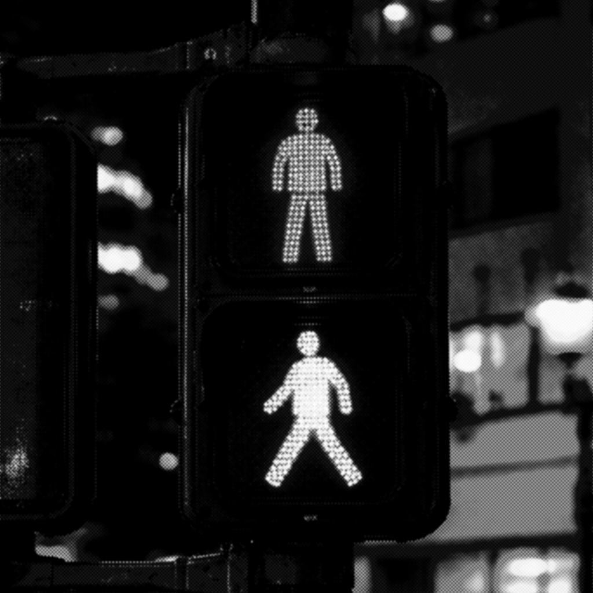

Городская среда
Сигнал пешеходного перехода
Сигналы пешеходного перехода конца 1980–1990-х издавали короткие «бипы» и мелодичные последовательности для слепых или слабовидящих людей.
Год: 1980-1990-ые
Устройство: Сигнал пешеходного перехода
Тип: Сигнал пешеходного перехода
Длительность: 10-20 секунд
Категория: Городская среда
